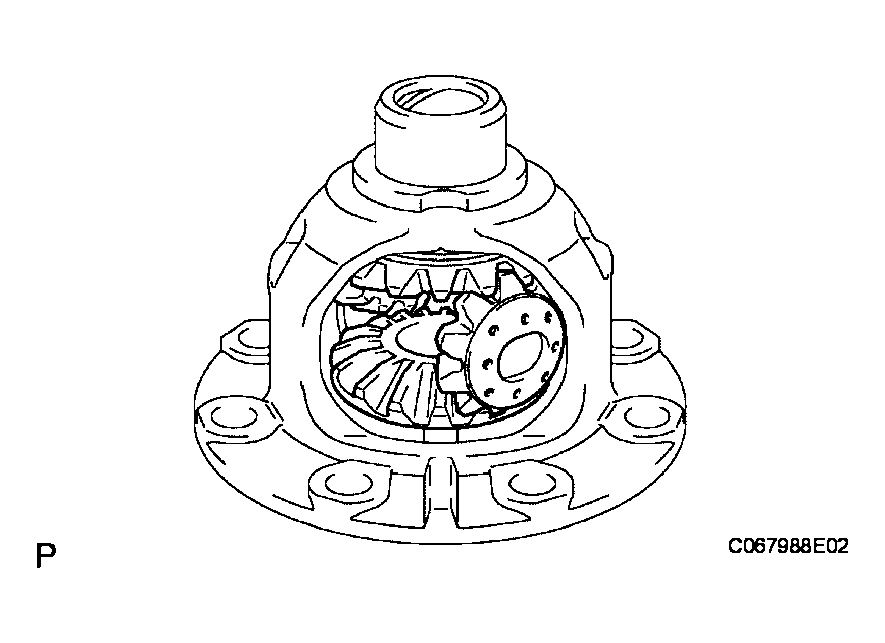

Differential Case: Reassembly
- INSTALL FRONT DIFFERENTIAL SIDE GEAR
- Coat the sliding and rotating surface of the front differential side gear with gear oil.
- Install the 2 front No. 1 differential side gear thrust washers to the 2 front differential side gears.
- Install the 2 front differential side gears, 2 front differential pinions and 2 front differential pinion thrust washers to the front differential case.

Courtesy of © TOYOTA, LICENSE AGREEMENT TMS1002HINT:
Revolving the front differential side gear, install the 2 front differential pinions and 2 front differential pinion thrust washers.
- INSTALL FRONT NO. 1 DIFFERENTIAL PINION SHAFT
- Coat the front No. 1 differential pinion shaft with MP grease.
- Install the front No. 1 differential pinion shaft to the front differential case so that the hole for the front differential pinion shaft straight pin is aligned with the hole in the front differential case.
- ADJUST FRONT DIFFERENTIAL SIDE GEAR BACKLASH
- Fix the front differential pinion to the front differential case side. Using a dial indicator, measure the gear backlash.
Standard backlash: 0.05 to 0.20 mm (0.0020 to 0.0079 in.)
If the backlash is not within the specification, replace the side gear thrust washer.
Standard thrust washer thickness
THRUST WASHER THICKNESS SPECIFICATIONPart No. Thickness mm (in.) 41361-22140 0.95 (0.0374 in.) 41361-22020 1.00 (0.0394 in.) 41361-22150 1.05 (0.0413 in.) 41361-22030 1.10 (0.0433 in.) 41361-22160 1.15 (0.0452 in.) 41361-22040 1.20 (0.0472 in.) HINT:
- Because the thrust washer does not have any marks for distinction, measure the thickness with a micrometer to select a proper thrust washer.
- Select washers of the same thickness for both the right and left side.
- Fix the front differential pinion to the front differential case side. Using a dial indicator, measure the gear backlash.
- INSTALL FRONT DIFFERENTIAL PINION SHAFT STRAIGHT PIN
- Using a 3 mm pin punch and hammer, tap in the front differential pinion shaft straight pin to the front differential case.
- Using a chisel and hammer, stake the front differential case hole.
- INSTALL FRONT DIFFERENTIAL RING GEAR
- Clean the contact surface of the front differential case and ring gear.
- Using a heater, heat the front differential ring gear to 90 to 110°C (194 to 230°F).
- After the moisture on the ring gear has completely evaporated, quickly install the ring gear to the differential case.
- Aligning both matchmarks, quickly install the front differential ring gear to the front differential case.
- Install the 8 bolts.
Torque: 77 N*m (790 kgf*cm, 57 ft.*lbf)
- INSTALL SPEEDOMETER DRIVE GEAR
- Install the drive gear to the front differential case.